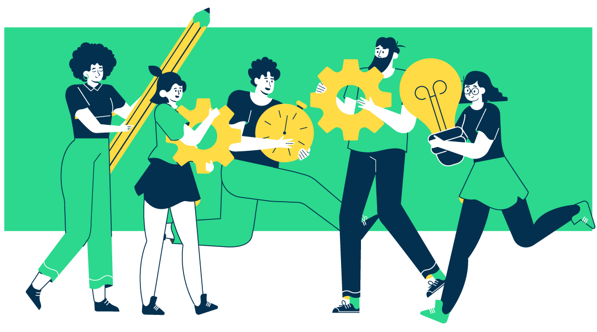

Design Thinking e Aprendizagem Baseada em Problemas [ABP]
Design Thinking e Aprendizagem Baseada em Problemas (Problem Based Learning — PBL) são metodologias ativas, que permitem ao aluno gerenciar suas próprias atividades e seu processo de aprendizagem, além de privilegiar a colaboração entre os pares.
Aprendizagem Baseada em Problemas [ABP]
Estudo a partir da resolução de problemas e de exemplos concretos
1
Identificação do problema
2
Apresentação do problema como aberto
3
Geração de hipóteses
4
Reformulação do problema
5
Organização do processo
6
Estudo de campo
7
Compartilhamento de resultados
Design Thinking
Processo de criação de soluções a partir da empatia com o público-alvo
1
Visita a campo
2
Aproximação com a comunidade
3
Protótipo inicial
4
Teste do protótipo pelo público alvo
5
Novo protótipo após o teste
6
Os passos 4 e 5 se repetem até o protótipo atender às necessidades do público-alvo
Para
dar certo

- O trabalho deve ser realizado em pequenos grupos.
- As equipes devem ser ecléticas, garantindo a diversidade de perspectivas e a multidisciplinaridade.
Adaptado de GARBIN, M. Desenvolvimento de um programa de capacitação para professores de Matemática do ensino público brasileiro com enfoque na aprendizagem colaborativa. Tese de doutorado. Campinas: Unicamp, 2014.